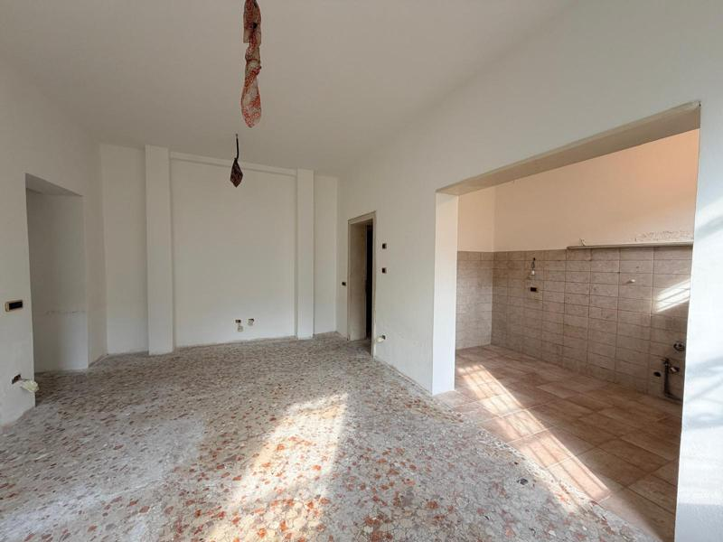
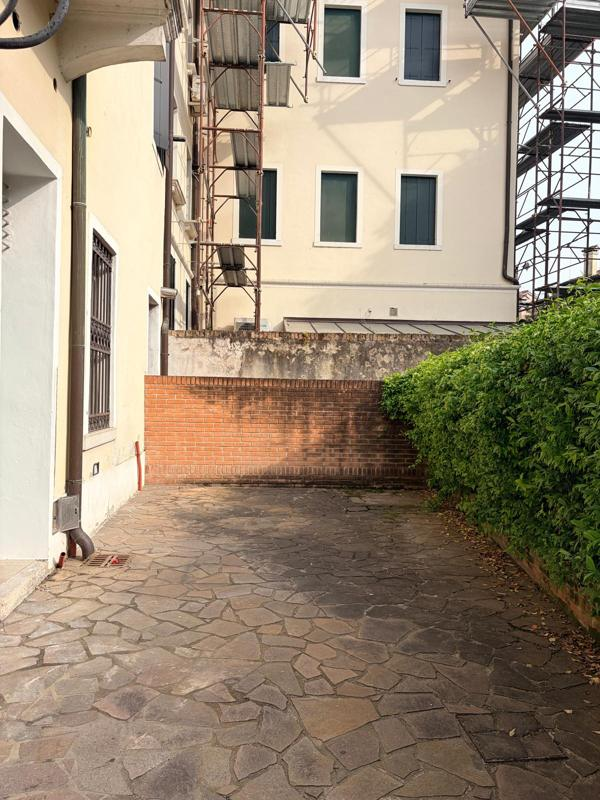
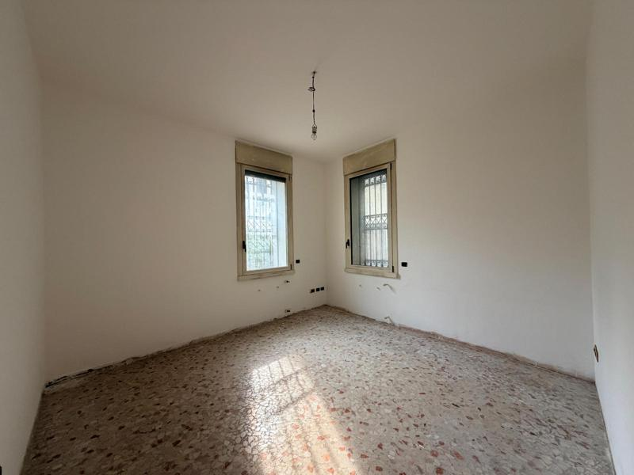
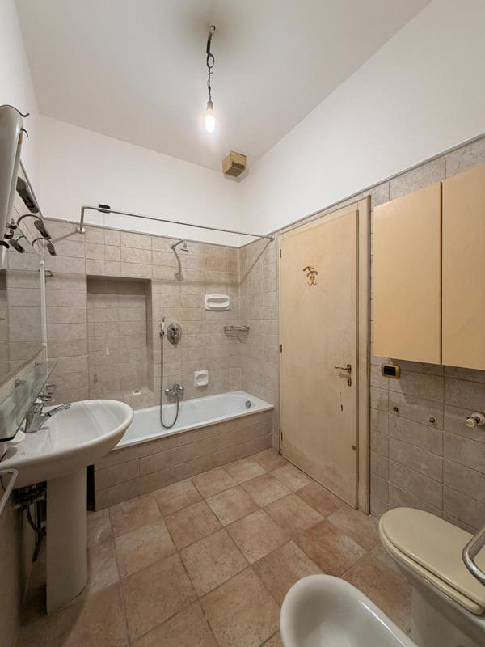
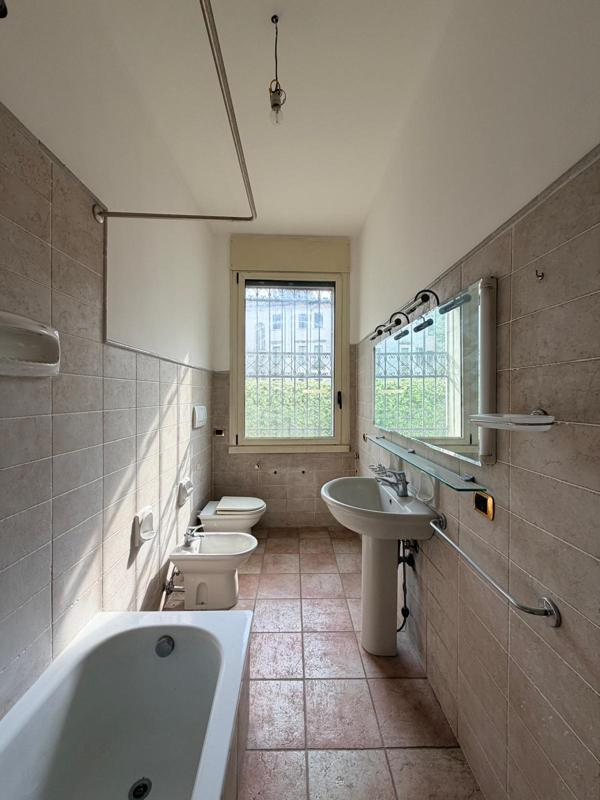
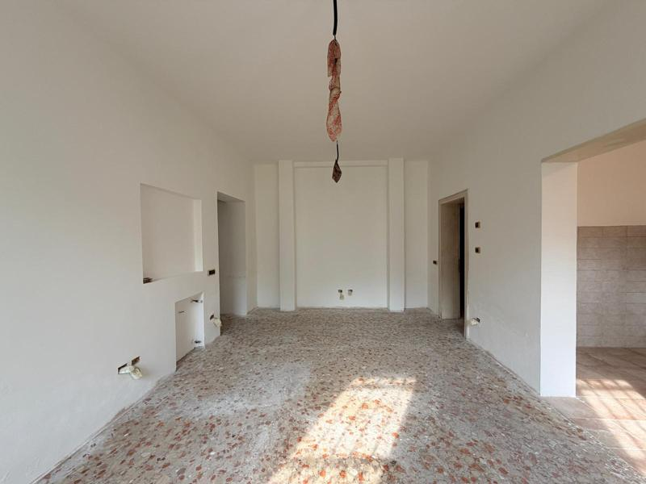
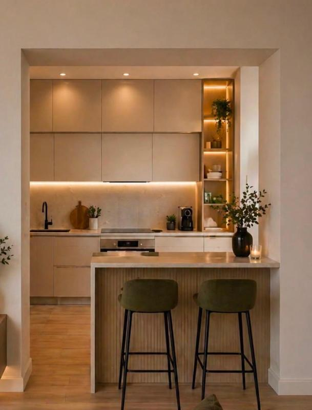
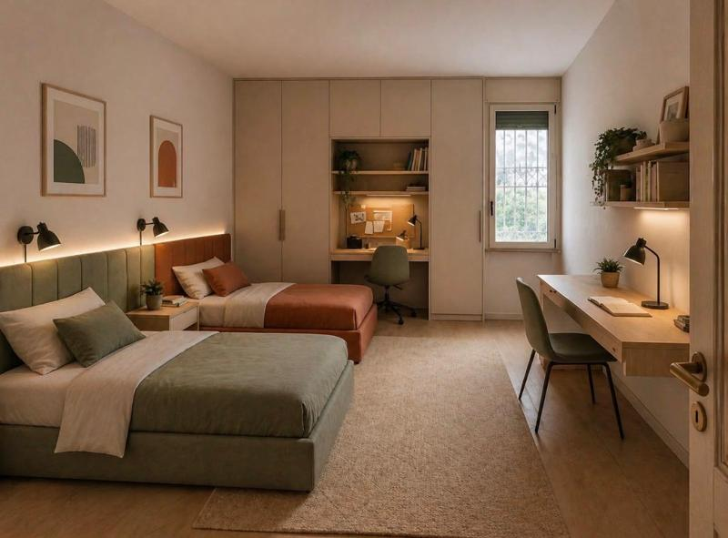
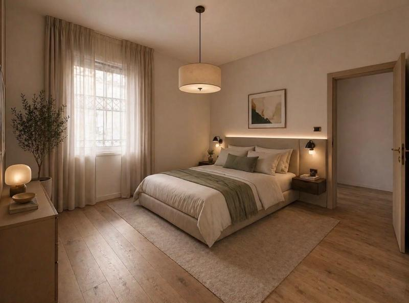
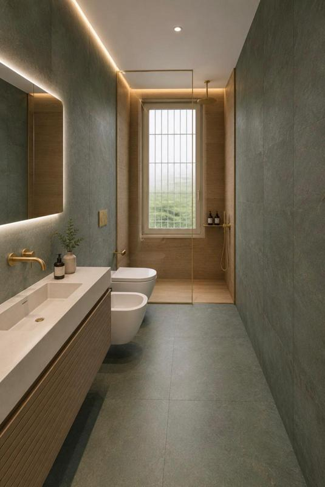

Appartamento in un condominio nel pieno centro città, con una zona esterna privata. Un immobile datato, con impianti e bagni da rifare completamente e infissi ormai vecchi.
Il cantiere è ancora in corso: le foto del prima mostrano lo stato originale dell'immobile, quelle del dopo sono i render di progetto, tranne il cortile, già sistemato.

Rifacimento completo dell'impianto idraulico e realizzazione di un nuovo riscaldamento a pavimento in tutti gli ambienti.
Sostituzione di tutti gli infissi con modelli più moderni ed efficienti, e ristrutturazione dei portoncini di ingresso.
Bagni rifatti completamente da zero, con finiture di design al posto delle piastrelle originali.
Valorizzazione del cortile privato come spazio vivibile, con arredi da esterno e illuminazione.









